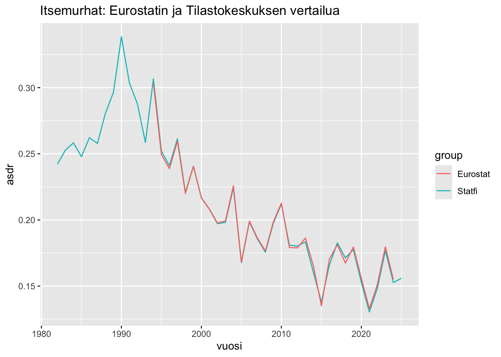
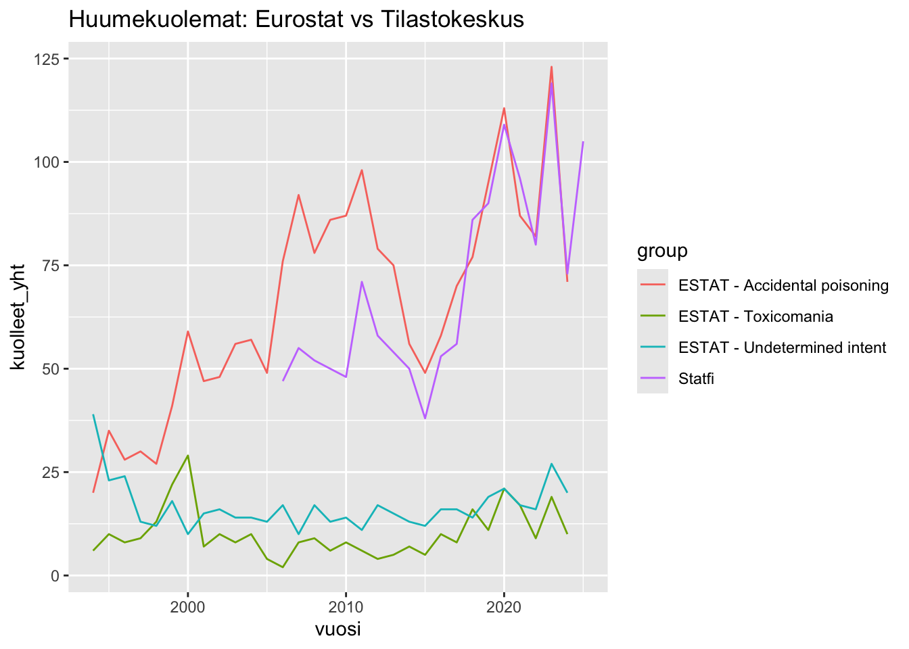

Code
library(eurostat)
library(dplyr)
library(ggplot2)
library(plotly)Lataamme tässä työkirjassa tarvittavat paketit normaaliin tapaan.
library(eurostat)
library(dplyr)
library(ggplot2)
library(plotly)Valitsemme vertailuun EU- ja EFTA-maat. EFTA-maihin kuuluvat Islanti, Norja, Liechtenstein ja Sveitsi.
maakoodit <- c(eurostat::eu_countries$code, eurostat::efta_countries$code)
maakoodit [1] "BE" "BG" "CZ" "DK" "DE" "EE" "IE" "EL" "ES" "FR" "HR" "IT" "CY" "LV" "LT"
[16] "LU" "HU" "MT" "NL" "AT" "PL" "PT" "RO" "SI" "SK" "FI" "SE" "IS" "LI" "NO"
[31] "CH"Säädämme asetukset, joissa määritetään haetaanko datat aina uudelleen Eurostatin rajapinnasta vai luetaanko ne lokaalista kansiosta. Eurostatin API-rajapinnan kuormittamisen välttämiseksi datat luetaan lähtökohtaisesti prepared_data -kansiosta, johon ne on tallennettu.
tallenna_datasetit <- lataa_datasetit_uudelleen <- TRUE
tuota_vektorikuviot <- FALSE
tuota_viivakuviot <- FALSEHaetaan eri maiden väestömäärät ikäryhmittäin. Erityisesti olemme kiinnostuneita ikäryhmistä 15-19, 20-24 ja 25-29, jotka yhdistetään myöhemmin laajemmaksi 15-29 -vuotiaiden ryhmäksi.
demo_pjangroup <- get_eurostat("demo_pjangroup",
filters = list(
geo = maakoodit,
sex = c("T", "M", "F"),
age = c("TOTAL", "Y15-19",
"Y20-24", "Y25-29"),
sinceTimePeriod = "1993"
)) |>
filter(age != "TOTAL") |>
arrange(geo, time, desc(sex)) |>
filter(sex == "T")
if (tallenna_datasetit) {
saveRDS(object = demo_pjangroup,
file = "prepared_data/demo_pjangroup.rds", compress = "xz")
}Koska itsemurhadataa oli saatavissa ainoastaan vuodesta 1994 eteenpäin, emme laske keskiväkilukua aiemmille vuosille.
demo_pjangroup <- readRDS(file = "prepared_data/demo_pjangroup.rds")
itse_laskettu_keskivakiluku_eu <- demo_pjangroup |>
rename(vuosi = time) |>
mutate(vuosi = as.character(format(vuosi, "%Y"))) |>
group_by(geo, vuosi) |>
summarize(vakiluku_15_29 = sum(values)) |>
mutate(keskivakiluku = (vakiluku_15_29 + lag(vakiluku_15_29)) / 2) %>%
ungroup()
# Poistetaan vuosi 1993 jolle keskiväkilukua ei laskettu
itse_laskettu_keskivakiluku_eu <- itse_laskettu_keskivakiluku_eu |>
filter(vuosi != "1993")Käytämme datasettiä hlth_cd_anr (Causes of death - absolute number) Eurostatin kansiosta “Causes of death - historical data (1994 - 2010)” hieman vanhemmalle datalle sekä hlth_cd_aro-datasettiä (Causes of death - deaths by country of residence and occurrence) Eurostatin tietokannan kansiosta “General mortality” vuotta 2011 ja uudempaa koskevaa dataa varten.
# Causes of death - absolute number
hlth_cd_anr <- get_eurostat("hlth_cd_anr",
filters = list(
geo = maakoodit,
icd10 = "X60-X84_Y870",
sex = c("T", "M", "F"),
age = c("TOTAL", "Y15-24",
"Y25-29")
))
eu_ksyyt_im_94_10 <- hlth_cd_anr |>
filter(sex == "T", age != "TOTAL") |>
rename(vuosi = time) |>
mutate(vuosi = format(vuosi, "%Y")) |>
group_by(geo, vuosi) |>
summarize(kuolleet_yht = sum(values))
# Causes of death - deaths by country of residence and occurrence
hlth_cd_aro <- get_eurostat("hlth_cd_aro",
filters = list(
geo = maakoodit,
icd10 = "X60-X84_Y870",
sex = c("T", "M", "F"),
age = c("TOTAL", "Y15-29"),
resid = "TOT_IN"
))
eu_ksyyt_im_11_25 <- hlth_cd_aro |>
filter(sex == "T", age != "TOTAL") |>
rename(vuosi = time) |>
mutate(vuosi = format(vuosi, "%Y")) |>
group_by(geo, vuosi) |>
summarize(kuolleet_yht = sum(values))
eu_ksyyt_im_94_25 <- rbind(eu_ksyyt_im_94_10, eu_ksyyt_im_11_25) |>
arrange(geo, vuosi)
eu_ksyyt_im_94_25$geo_label <- label_eurostat(eu_ksyyt_im_94_25$geo, dic = "geo")
if (tallenna_datasetit) {
saveRDS(object = eu_ksyyt_im_94_25,
file = "prepared_data/eu_ksyyt_im_94_25.rds", compress = "xz")
}Resid-filtterille voitaisiin käyttää myös toista vaihtoehtoa: TOT_RESID. Resid-filtterin vaihtoehdot on määritelty seuraavasti metadatassa:
The data are published for two different populations: the first one captures deaths of residents of a country and the second one captures all deaths occurring in a country.
The number for ‘All deaths reported in the country (TOT_IN)’ includes all deaths occurred in the reporting country, i.e. deaths of residents and non-residents in the reporting country.
The number for ‘All deaths of residents in or outside their home country (TOT_RESID)’ are calculated by taking data for residents dying in their home country (for example, deaths reported by Latvia for Latvian residents dying in Latvia) and adding the number of deaths that were reported by other countries to have died in their country (for example deaths of Latvian residents dying in Germany and reported by Germany).
Visualisoidaan itsemurhien lukumäärät 15-29 -vuotiaiden joukossa käyttäen lukumääriä (raw counts).
eu_ksyyt_im_94_25 <- readRDS(file = "prepared_data/eu_ksyyt_im_94_25.rds")
ggplot_eu_ksyyt_1994_2025 <- eu_ksyyt_im_94_25 |>
mutate(vuosi = as.numeric(vuosi)) |>
ggplot(aes(x = vuosi, y = kuolleet_yht)) +
geom_line(aes(color = geo_label)) +
labs(x = "Vuosi",
y = "lkm",
color = "Maa",
title = "Itsemurhat (lkm, 1994-2025)")
ggplotly(ggplot_eu_ksyyt_1994_2025)Metadatan perusteella (reference metadata) vuosien 2011 ja 2012 välillä voisi olettaa olevan jonkinlaisen hyppäyksen, mutta kuvaajassa ei sellaista näy.
There is a break in series in 2011, when Commission regulation No 328/2011 entered into force and some concept were revised (place of occurrence/residence and age groups). Additionally, before 2011 different classification systems for coding the cause of death could be used.
Vakavasti otettavassa tarkastelussa jakson rajaaminen 2011 jälkeiseen aikaan olisi siis varmasti perusteltua, mutta kuvaajaa katsomalla ei havaita mitään suurta hyppäystä tai laskua eri maiden tilastoissa, joten käytetään tässä demonstraatiossa aineistoa niin pitkältä ajalta kuin sitä on saatavilla eli vuodesta 1994 eteenpäin.
eu_ksyyt_im_94_25 <- readRDS(file = "prepared_data/eu_ksyyt_im_94_25.rds")
eu_ksyyt_im_11_25 <- eu_ksyyt_im_94_25 |>
filter(vuosi > 2010)
eu_ksyyt_im_11_25_asdr <- left_join(eu_ksyyt_im_11_25, itse_laskettu_keskivakiluku_eu, by = join_by("vuosi" == "vuosi", "geo" == "geo")) |>
filter(as.numeric(vuosi) > 2010) |>
mutate(asdr = (kuolleet_yht / keskivakiluku) * 1000) |>
mutate(vuosi = as.numeric(vuosi))
eu_ksyyt_im_94_25_asdr <- left_join(eu_ksyyt_im_94_25, itse_laskettu_keskivakiluku_eu, by = join_by("vuosi" == "vuosi", "geo" == "geo")) |>
mutate(asdr = (kuolleet_yht / keskivakiluku) * 1000) |>
mutate(vuosi = as.numeric(vuosi))asdr_plotti <- ggplot(eu_ksyyt_im_94_25_asdr, aes(x = vuosi, y = asdr)) +
geom_line(aes(color = geo_label)) +
labs(x = "Vuosi",
y = "ASDR",
color = "Maa",
title = "Itsemurhat (ASDR, 1994-2025)")
ggplotly(asdr_plotti)Kansalliset tilastoviranomaiset toimittavat datan Eurostatille, joten oletusarvo on se, että Tilastokeskuksen ja Eurostatin datat vastaavat toisiaan täydellisesti, tai ainakin ovat hyvin lähellä toisiaan. Testataan tätä visualisoimalla Eurostatin ja Tilastokeskuksen data samaan kuvaajaan.
statfin_ksyyt_pxt_11az <- readRDS("prepared_data/statfin_ksyyt_pxt_11az.rds")
itsemurhat_vakivalta <- statfin_ksyyt_pxt_11az %>%
# filter(sukupuoli %in% c("Miehet", "Naiset"), as.numeric(vuosi) >= 2006) %>%
# filter(!(tilaston_peruskuolemansyy_aikasarjaluokitus %in% "00-54 Yhteensä")) %>%
group_by(tilaston_peruskuolemansyy_aikasarjaluokitus, vuosi, ika, sukupuoli) %>%
summarize(kuolleet_69_25 = sum(kuolleet)) %>%
mutate(kuolemansyy = case_when(
tilaston_peruskuolemansyy_aikasarjaluokitus == "50 Itsemurhat (X60-X84, Y870)" ~ "itsemurha",
tilaston_peruskuolemansyy_aikasarjaluokitus == "51 Murha, tappo tai muu tahallinen pahoinpitely (X85-Y09, Y871)" ~ "vakivalta",
.default = "muut"
)) %>%
ungroup() %>%
select(vuosi, ika, sukupuoli, kuolleet_69_25, kuolemansyy)
itsemurhat_yht <- itsemurhat_vakivalta %>%
filter(kuolemansyy == "itsemurha") |>
filter(sukupuoli == "Yhteensä") |>
summarize(kuolleet_yht = sum(kuolleet_69_25), .by = "vuosi")
statfin_vaerak_pxt_11s1 <- readRDS("prepared_data/statfin_vaerak_pxt_11s1.rds")
keskivakiluvut <- statfin_vaerak_pxt_11s1 %>%
mutate(ikaryhma = case_when(
ika %in% as.character(15:19) ~ "15 - 19",
ika %in% as.character(20:24) ~ "20 - 24",
ika %in% as.character(25:29) ~ "25 - 29",
.default = "muut"
)) %>%
group_by(vuosi, sukupuoli, ikaryhma) %>%
summarize(keskivakiluku_ikaryhma = sum(keskivakiluku)) %>%
ungroup()
keskivakiluvut_15_29 <- statfin_vaerak_pxt_11s1 %>%
mutate(ikaryhma = "15 - 29") %>%
group_by(vuosi, sukupuoli, ikaryhma) %>%
summarize(keskivakiluku_ikaryhma = sum(keskivakiluku)) %>%
ungroup()
keskivakiluvut_15_29_yht <- keskivakiluvut_15_29 |>
filter(sukupuoli == "Yhteensä")
itsemurhat_1981_2025_asdr <- left_join(itsemurhat_yht, keskivakiluvut_15_29_yht, by = join_by("vuosi" == "vuosi")) %>%
filter(as.numeric(vuosi) > 1981) %>%
mutate(asdr = (kuolleet_yht / keskivakiluku_ikaryhma) * 1000) |>
mutate(vuosi = as.integer(vuosi)) |>
mutate(group = "Statfi") |>
select(vuosi, group, asdr)eu_ksyyt_im_94_25_asdr_fi <- eu_ksyyt_im_94_25_asdr |>
filter(geo == "FI") |>
mutate(group = "Eurostat") |>
ungroup() |>
select(vuosi, group, asdr)
comparison_groups <- rbind(itsemurhat_1981_2025_asdr, eu_ksyyt_im_94_25_asdr_fi)
ggplot(comparison_groups, aes(group = desc(group))) +
geom_line(aes(x = vuosi, y = asdr, colour = group), na.rm = TRUE) +
labs(title = "Itsemurhat: Eurostatin ja Tilastokeskuksen vertailua")
Lukuunottamatta pieniä eroja Eurostatin ja Tilastokeskuksen luvut vaikuttaisivat hyvin pitkälti vastaavan toisiaan.
# Causes of death - absolute number
hlth_cd_anr <- get_eurostat("hlth_cd_anr",
filters = list(
geo = maakoodit,
icd10 = "X85-Y09_Y871",
sex = c("T"),
age = c("Y15-24",
"Y25-29")
))
eu_ksyyt_vakivalta_94_10 <- hlth_cd_anr |>
rename(vuosi = time) |>
mutate(vuosi = format(vuosi, "%Y")) |>
group_by(geo, vuosi) |>
summarize(kuolleet_yht = sum(values))
# Causes of death - deaths by country of residence and occurrence
hlth_cd_aro <- get_eurostat("hlth_cd_aro",
filters = list(
geo = maakoodit,
icd10 = "X85-Y09_Y871",
sex = c("T"),
age = c("Y15-29"),
resid = "TOT_IN"
))
eu_ksyyt_vakivalta_11_25 <- hlth_cd_aro |>
rename(vuosi = time) |>
mutate(vuosi = format(vuosi, "%Y")) |>
group_by(geo, vuosi) |>
summarize(kuolleet_yht = sum(values))
eu_ksyyt_vakivalta_94_25 <- rbind(eu_ksyyt_vakivalta_94_10, eu_ksyyt_vakivalta_11_25) |>
arrange(geo, vuosi)
eu_ksyyt_vakivalta_94_25$geo_label <- label_eurostat(eu_ksyyt_vakivalta_94_25$geo, dic = "geo")
if (tallenna_datasetit) {
saveRDS(object = eu_ksyyt_vakivalta_94_25,
file = "prepared_data/eu_ksyyt_vakivalta_94_25.rds", compress = "xz")
}eu_ksyyt_vakivalta_94_25 <- readRDS(file = "prepared_data/eu_ksyyt_vakivalta_94_25.rds")
eu_vakivalta_94_25_asdr <- left_join(eu_ksyyt_vakivalta_94_25, itse_laskettu_keskivakiluku_eu, by = join_by("vuosi" == "vuosi", "geo" == "geo")) |>
mutate(asdr = (kuolleet_yht / keskivakiluku) * 1000) |>
mutate(vuosi = as.numeric(vuosi))asdr_plotti <- ggplot(eu_vakivalta_94_25_asdr, aes(x = vuosi, y = asdr)) +
geom_line(aes(color = geo_label)) +
labs(x = "Vuosi",
y = "ASDR",
color = "Maa",
title = "Väkivaltakuolemat (ASDR, 1994-2025)")
ggplotly(asdr_plotti)Luvut vaikuttavat melko järkeenkäyviltä. Norjan piikki vuodelta 2011 selittynee silloin tapahtuneella terrori-iskulla…
Käytetään lukumääriä (raw counts) vertailemaan Eurostatin ja Tilastokeskuksen tietoja.
statfin_ksyyt_pxt_11az <- readRDS("prepared_data/statfin_ksyyt_pxt_11az.rds")
itsemurhat_vakivalta <- statfin_ksyyt_pxt_11az %>%
# filter(sukupuoli %in% c("Miehet", "Naiset"), as.numeric(vuosi) >= 2006) %>%
# filter(!(tilaston_peruskuolemansyy_aikasarjaluokitus %in% "00-54 Yhteensä")) %>%
group_by(tilaston_peruskuolemansyy_aikasarjaluokitus, vuosi, ika, sukupuoli) %>%
summarize(kuolleet_69_25 = sum(kuolleet)) %>%
mutate(kuolemansyy = case_when(
tilaston_peruskuolemansyy_aikasarjaluokitus == "50 Itsemurhat (X60-X84, Y870)" ~ "itsemurha",
tilaston_peruskuolemansyy_aikasarjaluokitus == "51 Murha, tappo tai muu tahallinen pahoinpitely (X85-Y09, Y871)" ~ "vakivalta",
.default = "muut"
)) %>%
ungroup() %>%
select(vuosi, ika, sukupuoli, kuolleet_69_25, kuolemansyy)
vakivalta_ikaryhmat <- itsemurhat_vakivalta |>
filter(kuolemansyy == "vakivalta") |>
filter(sukupuoli == "Yhteensä") |>
summarize(kuolleet_yht = sum(kuolleet_69_25), .by = "vuosi") |>
mutate(vuosi = as.numeric(vuosi)) |>
mutate(group = "Statfi") |>
select(vuosi, kuolleet_yht, group)eu_ksyyt_vakivalta_94_25_fi <- eu_ksyyt_vakivalta_94_25 |>
filter(geo == "FI") |>
mutate(vuosi = as.numeric(vuosi)) |>
mutate(group = "Eurostat") |>
select(vuosi, kuolleet_yht, group)
comparison_groups <- rbind(eu_ksyyt_vakivalta_94_25_fi, vakivalta_ikaryhmat)
ggplot(comparison_groups, aes(group = desc(group))) +
geom_line(aes(x = vuosi, y = kuolleet_yht, colour = group), na.rm = TRUE) +
labs(title = "Väkivaltakuolemat: Eurostatin ja Tilastokeskuksen vertailua")
# Causes of death - absolute number
hlth_cd_anr <- get_eurostat("hlth_cd_anr",
filters = list(
geo = maakoodit,
icd10 = c("TOXICO", "X40-X49", "Y10-Y34_Y872"),
sex = c("T"),
age = c("Y15-24",
"Y25-29")
))
eu_ksyyt_huumeet_94_10_separated <- hlth_cd_anr |>
rename(vuosi = time) |>
mutate(vuosi = format(vuosi, "%Y")) |>
group_by(geo, vuosi, icd10) |>
summarize(kuolleet_yht = sum(values))
eu_ksyyt_huumeet_94_10 <- hlth_cd_anr |>
rename(vuosi = time) |>
mutate(vuosi = format(vuosi, "%Y")) |>
group_by(geo, vuosi) |>
summarize(kuolleet_yht = sum(values))
# Causes of death - deaths by country of residence and occurrence
hlth_cd_aro <- get_eurostat("hlth_cd_aro",
filters = list(
geo = maakoodit,
icd10 = c("TOXICO", "X40-X49", "Y10-Y34_Y872"),
sex = c("T"),
age = c("Y15-29"),
resid = "TOT_IN"
))
eu_ksyyt_huumeet_11_25_separated <- hlth_cd_aro |>
rename(vuosi = time) |>
mutate(vuosi = format(vuosi, "%Y")) |>
group_by(geo, vuosi, icd10) |>
summarize(kuolleet_yht = sum(values))
eu_ksyyt_huumeet_11_25 <- hlth_cd_aro |>
rename(vuosi = time) |>
mutate(vuosi = format(vuosi, "%Y")) |>
group_by(geo, vuosi) |>
summarize(kuolleet_yht = sum(values))
eu_ksyyt_huumeet_94_25 <- rbind(eu_ksyyt_huumeet_94_10, eu_ksyyt_huumeet_11_25) |>
arrange(geo, vuosi)
eu_ksyyt_huumeet_94_25$geo_label <- label_eurostat(eu_ksyyt_huumeet_94_25$geo, dic = "geo")
eu_ksyyt_huumeet_94_25_separated <- rbind(eu_ksyyt_huumeet_94_10_separated, eu_ksyyt_huumeet_11_25_separated) |>
arrange(geo, vuosi)
eu_ksyyt_huumeet_94_25_separated$geo_label <- label_eurostat(eu_ksyyt_huumeet_94_25_separated$geo, dic = "geo")
if (tallenna_datasetit) {
saveRDS(object = eu_ksyyt_huumeet_94_25,
file = "prepared_data/eu_ksyyt_huumeet_94_25.rds", compress = "xz")
saveRDS(object = eu_ksyyt_huumeet_94_25_separated,
file = "prepared_data/eu_ksyyt_huumeet_94_25_separated.rds", compress = "xz")
}Tilastokeskuksen julkaisun mukaan:
Tilastokeskus määrittelee huumausainekuolemat Euroopan unionin huumeviraston EUDA:n määritelmän mukaisesti (Selection B -luokitus).
EUDA:n määritelmässä huumausainekuolemat jaetaan neljään ryhmään: tapaturmaisiin myrkytyksiin, huumeriippuvuuden tai pitkäaikaisen huumeiden käytön haittojen aiheuttamiin kuolemiin, huumeilla tehtyihin itsemurhiin ja tahallisuudeltaan epäselviin huumausainemyrkytyksiin.
Eurostatin määritelmä vaikuttaisi olevan hieman tätä laveampi ja mukana saattaa siis olla myös muunlaisia myrkytyskuolemia kuin huumausainekuolemia.
statfin_ksyyt_pxt_12d9_ilman_itsemurhia <- readRDS("prepared_data/statfin_ksyyt_pxt_12d9_ilman_itsemurhia.rds")
huumekuolemat_yht <- statfin_ksyyt_pxt_12d9_ilman_itsemurhia %>%
filter(sukupuoli %in% c("Yhteensä")) %>%
filter(as.numeric(vuosi) >= 2006) %>%
group_by(vuosi, sukupuoli, kuolemansyy) %>%
summarize(kuolleet_06_25_yht = sum(kuolleet_06_25, na.rm = TRUE)) %>%
ungroup() |>
mutate(vuosi = as.numeric(vuosi))eu_ksyyt_huumeet_94_25_fi <- eu_ksyyt_huumeet_94_25 |>
filter(geo == "FI") |>
mutate(vuosi = as.numeric(vuosi)) |>
mutate(group = "Eurostat") |>
select(vuosi, kuolleet_yht, group)
huumekuolemat_yht_fi <- huumekuolemat_yht |>
mutate(group = "Statfi") |>
rename(kuolleet_yht = kuolleet_06_25_yht) |>
select(vuosi, kuolleet_yht, group)
comparison_groups <- rbind(eu_ksyyt_huumeet_94_25_fi, huumekuolemat_yht_fi)
ggplot(comparison_groups) +
geom_line(aes(x = vuosi, y = kuolleet_yht, colour = group), na.rm = TRUE) +
labs(title = "Huumekuolemat: Eurostat vs. Tilastokeskus")
Nähdään, että että Eurostatin datassa on mukana paitsi enemmän ICD10-koodeja kuin Tilastokeskuksen datassa, myös enemmän tapauksia. Katsotaan varmuuden vuoksi kategorioita erikseen:
eu_ksyyt_huumeet_94_25_separated <- readRDS(file = "prepared_data/eu_ksyyt_huumeet_94_25_separated.rds")
eu_ksyyt_huumeet_94_25_separated_fi <- eu_ksyyt_huumeet_94_25_separated |>
filter(geo == "FI") |>
mutate(vuosi = as.numeric(vuosi)) |>
mutate(group = case_when(
icd10 == "TOXICO" ~ "ESTAT - Toxicomania",
icd10 == "X40-X49" ~ "ESTAT - Accidental poisoning",
icd10 == "Y10-Y34_Y872" ~ "ESTAT - Undetermined intent",
.default = "Other"
)) |>
select(vuosi, kuolleet_yht, group)
huumekuolemat_yht_fi <- huumekuolemat_yht |>
mutate(group = "Statfi") |>
rename(kuolleet_yht = kuolleet_06_25_yht) |>
select(vuosi, kuolleet_yht, group)
comparison_groups <- rbind(eu_ksyyt_huumeet_94_25_separated_fi, huumekuolemat_yht_fi)
ggplot(comparison_groups) +
geom_line(aes(x = vuosi, y = kuolleet_yht, colour = group), na.rm = TRUE) +
labs(title = "Huumekuolemat: Eurostat vs Tilastokeskus")
Eurostatin ja Tilastokeskuksen tietojen erot ovat suuremmat kuin muissa tilastoissa. Jostain syystä myöhempien vuosien osalta kategoria “Accidental poisoning” on yhtenevä Tilastokeskuksen määritelmän kanssa. Toisaalta “Tapaturmaiset huumeiden aiheuttamat myrkytykset (X41,X42,X44/T400-9,T436)” on suurin kategoria myös Tilastokeskuksen datassa.
Edellä mainitusta voitaneen vetää johtopäätös, että ainoa tapa vertailla Suomen ja EU:n kuolleisuutta on käyttää Accidental poisoning -kategoriaa, vaikka sekään ei vastaa täydellisesti Suomen lukuja.
eu_ksyyt_huumeet_94_25_separated <- readRDS(file = "prepared_data/eu_ksyyt_huumeet_94_25_separated.rds")
eu_ksyyt_huumeet_94_25_toxico <- eu_ksyyt_huumeet_94_25_separated |>
filter(icd10 == "TOXICO")
eu_ksyyt_huumeet_94_25_asdr <- left_join(eu_ksyyt_huumeet_94_25_toxico, itse_laskettu_keskivakiluku_eu, by = join_by("vuosi" == "vuosi", "geo" == "geo")) |>
mutate(asdr = (kuolleet_yht / keskivakiluku) * 1000) |>
mutate(vuosi = as.numeric(vuosi))asdr_plotti <- ggplot(eu_ksyyt_huumeet_94_25_asdr, aes(x = vuosi, y = asdr)) +
geom_line(aes(color = geo_label)) +
labs(x = "Vuosi",
y = "ASDR",
color = "Maa")
ggplotly(asdr_plotti)Huomataan, että Sveitsissä ja Norjassa 1990-luvulla ja 2000-luvun alussa on ollut paljon huumekuolemia nuorten keskuudessa. Itävallassa piikki on ollut vasta 2003-2013 paikkeilla. Liechtensteinin kaltaisten kääpiövaltioiden tapauksessa muutamakin kuolemantapaus voi aihuettaa voimakkaita piikkejä, kuten 2021 tapauksessa. Suomen luvut ovat pitkällä aikavälillä melko maltillisia, joskin 2020-luvun kärkisijoilla.